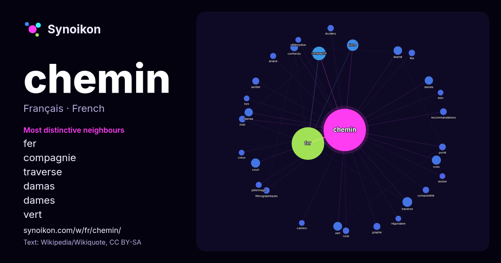

Français · liste des mots du jour
chemin
“road” · Les mots trouvés autour de lui dans 1299 occurrences issues de Wikipédia, Wikiquote.

Voisins les plus spécifiques
- fer 153×
- compagnie 22×
- traverse 19×
- damas 17×
- dames 16×
- vert 16×
- confondu 15×
- croix 15×
- court 15×
- liberté 14×
- graphe 12×
- sentier 12×
- recommandations 11×
- filmographiques 11×
- écoliers 11×
- compostelle 11×
- midi 11×
- fée 11×
- rural 10×
- ariane 9.8×
× = combien de fois plus souvent que dans le texte général de Wikipédia.
Voisins les plus fréquents
- fer 258
- compagnie 45
- ligne 32
- grand 26
- nom 24
- paris 23
- traverse 23
- français 22
- france 22
- court 20
- croix 20
- vert 19
- film 18
- liberté 18
- albums 17
- damas 17
- dames 17
- long 16
- confondu 15
- droit 15
En contexte
- voir Chemin (homonymie). Ne doit pas être confondu avec route ou voie de communication. Un chemin est une voie, un passage (lieu de « cheminement ») destiné Wikipedia snippets · Chemin
- par la foreuse et la mini pelleteuse situés au bout du bras du rover : CheMin qui effectue l'analyse minéralogique et SAM qui effectue l'analyse des éléments Wikipedia snippets · Mars Science Laboratory
- Pour les articles homonymes, voir Cheminée (homonymie). Ne doit pas être confondu avec Âtre. La cheminée est le conduit (conduit de fumée), construit en Wikipedia snippets · Cheminée
- Pour les articles homonymes, voir Chemin (homonymie). Les chemins de Compostelle sont les itinéraires empruntés par les pèlerins pour se rendre à Wikipedia snippets · Chemins de Compostelle
- homonymes, voir Chemin (homonymie). Article connexe : Bataille du Chemin des Dames. Le Chemin des Dames ou RD 18 CD (CD mis pour « Chemin des Dames ») est Wikipedia snippets · Chemin des Dames
- Pour les articles homonymes, voir Chemin de fer (homonymie). Cet article ne cite pas suffisamment ses sources (janvier 2025). Si vous disposez d'ouvrages Wikipedia snippets · Chemin de fer
- Pour les articles homonymes, voir Chemin (homonymie). Cet article est une ébauche concernant l’informatique. Vous pouvez partager vos connaissances en Wikipedia snippets · Chemin d'accès
- Pour les articles homonymes, voir Chemin de croix (homonymie). Le Chemin de croix (en latin Via crucis) est, dans la tradition chrétienne, un acte dévotionnel Wikipedia snippets · Chemin de croix
Autres mots
- art
- automne
- carte
- chanson
- chat
- cheval
- chien
- climat
- cloche
- cœur
- dieu
- désert
- eau
- famille
- forêt
- histoire
- hiver
- horloge
- jardin
- langue
- miel
- miroir
- monnaie
- montagne
- mort
- mère
- nature
- nourriture
- ombre
- pain
- pluie
- pont
- pouvoir
- printemps
- santé
- science
- sel
- silence
- temps
- tempête
- thé
- train
- travail
- trésor
- vie
- ville
- vérité
- étoile
- île
Précalculé le 2026-10-09 avec les paramètres par défaut (±5 mots, corpus moyen). La carte interactive peut l’actualiser avec des données en direct.
Interface traduite automatiquement ; corrections bienvenues.